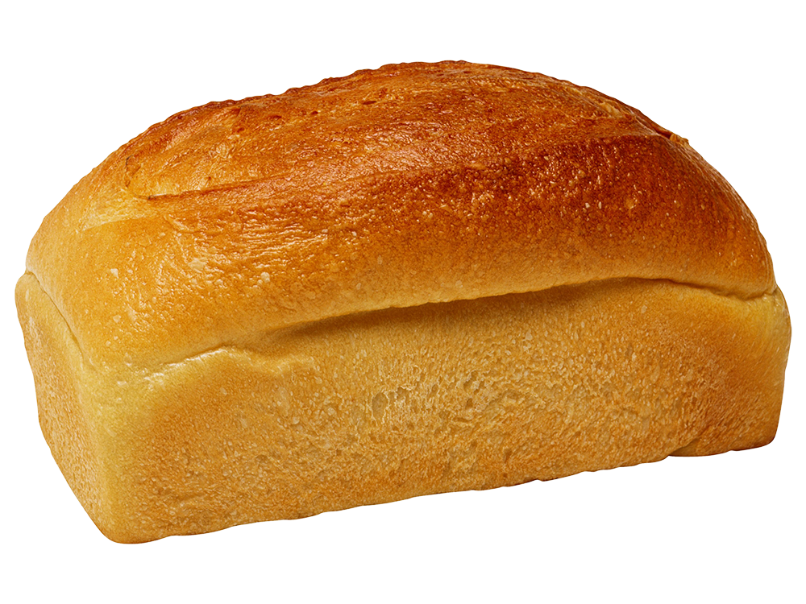

|
바게트 |
| ★★★☆☆ 3/5 | |
| 갓나온 바게트를 먹으면 겉바속촉이지만, 대부분의 바게트들은 겉부분이 너무 딱딱해서 먹기 힘들다. 대신 파스타와 함께 먹게되면 겉부분이 부들부들해져서 맛있고 조합도 좋다. |
| 크로와상 |  |
| ★★★★☆ 4/5 | |
| 파삭파삭한 식감과 쫀득한 식감으로 가볍게 먹기 좋은 빵이다. 빵 사이에 생크림과 과일을 같이 넣어서 먹으면 더 맛있다. 샌드위치 빵으로도 잘 어울린다. |
 |
치아바타 |
| ★★★★★ 5/5 | |
| 겉촉속촉으로 쫄깃한 식감을 가졌으며, 여러 토핑을 넣어서 만든다. 토핑이 추가된 치아바타 중 올리브가 가장 잘 어울렸고, 샌드위치 빵으로도 잘 어울린다. 토핑이 추가되지 않은 기본 빵도 담백하니 맛이 있다. 주로 발사믹 소스와 올리브유를 섞은 소스에 찍어먹거나 한다. |
| 식빵 |  |
| ★★★★☆ 4/5 | |
| 빵 중에서 가장 기본이 되는 빵이며, 어디든지 어울리는 빵이다. 특히 갓 나온 식빵은 통식빵으로 찢어먹는 맛이 좋다. |
 |
포카치아 |
| ★★★★★ 5/5 | |
| 치아바타와 비슷한 식감과 맛을 가졌으며, 허브와 올리브를 곁들여 먹는 것이 기본적이다. 피자 먹는 것처럼 토핑을 더 추가하여 먹는다. 치아바타랑 비슷하여 좋아한다. |
| 깜빠뉴 |  |
| ★★★★☆ 4/5 | |
| 바게트와 비슷한 느낌의 겉바속촉이며, 바게트보다 겉이 더 부드럽다. 주로 호두나 무화과 등을 넣어 식감도 살리고 맛도 더 풍부해진다. 특히 무화과 깜빠뉴가 제일 맛있다. |
coprightⓒ 2023. 장성경. All right reserved.